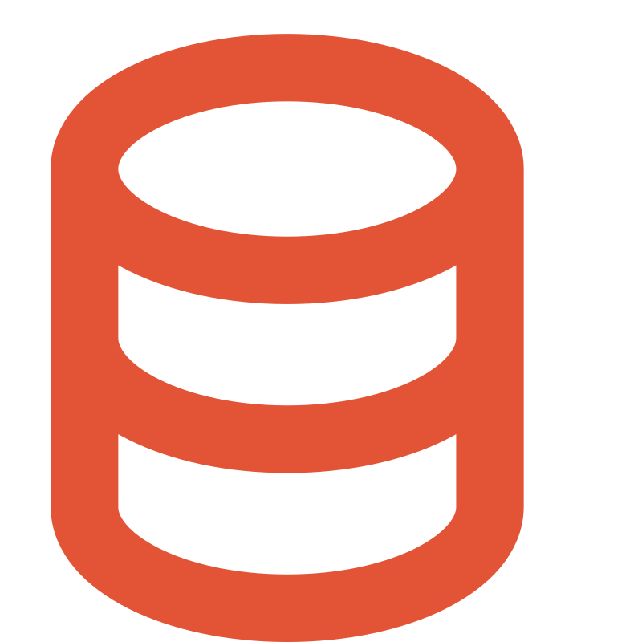

Use the green button to edit the resource (moderated: it may take a few days before changes appear).

The Archives nationales de France authority records and vocabulariesA RDF/RiC-O 1.1 and SKOS version of the 18,400 authority records on persons, families and corporate bodies, 54,120 records about places, and 13 authoritative lists and controlled vocabularies (defining about 3,560 concepts) produced and used by the AnF, as contextual entities for the records preserved by the institution. This RDF knowledge graph is far richer than the source files managed by the institution in its information system, as the data has been restructured and enriched through various automatic or semi-automatic processes.
For more information about the dataset, see the notes of the latest release, dated October 2026, and this page, which also exists in English.
This knowledge graph has also been accessible, from April 2026, through a web interface and a SPARQL end point (see the links below).
The latest release is a major step.
The Lab of the Archives nationales de France will continue to work on the dataset. You can find some information on the project roadmap here.